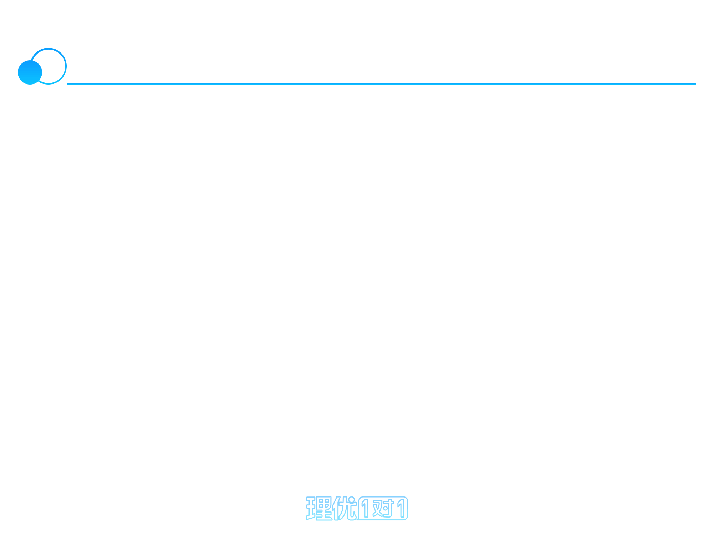
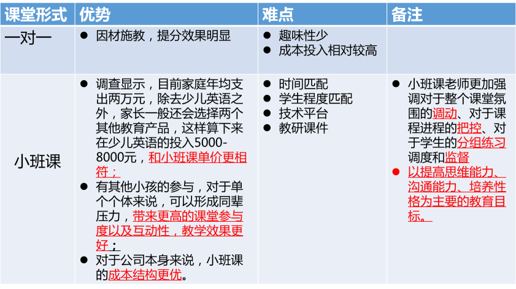

小班课产品分析报告

目录
一．产品概述
二．竞品核心分析
三．目标用户
四．竞品分析
五．swot分析

产品概述
PEST分析
一对一和小班课对比
数学科目市场分析

中国互联网K12教育市场现状
政治
2016年，教育部印发《教育信息化“十
三五”规划》的通知，其中指出加快探
索数字教育资源服务供给模式，有效提
高数字教育资源服务水平与能力，深化
信息技术与教育教学的融合发展，将有
利于互联网教育与现有线下教学模式的
进一步融合发展。
经济
中国社会经济发展和人民收入水平不断
提高，教育消费占比不断得以提升。目
前线下K12教育市场已经十分成熟，但线
下机构的教学人员成本和租赁成本占比
较高，且资源分布不均，线上K12教育的
发展将有利于教育资源的普及。
社会
中国社会观念一直对K12教育的投入很大，
基础教育一直受到家庭重视，并在当前
中国的教育体制下，K12教育最终导向依
然是应试结果，K12教育培训市场呈现刚
性需求。
技术
智能设备的普及、大数据以及处理技术
不断创新与迭代，互联网教育企业及其
产品的精准定位，以及商业模式的确定
都具有至关重要的指导意义。
一对一和小班课区别
